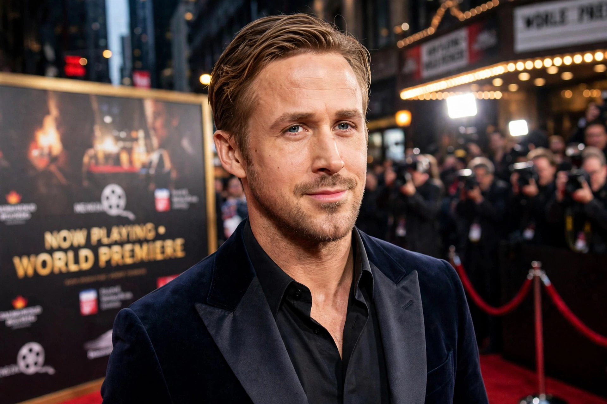

Ryan Thomas Gosling (born November 12, 1980) is a Canadian actor and musician. He rose to fame as a child star on The Mickey Mouse Club and gained acclaim for independent films before achieving global success with The Notebook (2004), Drive (2011), La La Land (2016) and Barbie (2023).

| Born | November 12, 1980, London, Ontario, Canada |
|---|---|
| Occupation | Actor, musician |
| Years active | 1993–present |
| Partner | Eva Mendes (since 2011) |
| Children | 2 |
Gosling was born in London, Ontario, and raised in Burlington. He performed in talent shows with his sister and was cast in Disney Channel's The Mickey Mouse Club (1993–1995) alongside Britney Spears and Justin Timberlake.
After roles in Young Hercules and The Believer (2001), his romantic lead in The Notebook made him a star. He earned an Academy Award nomination for Half Nelson (2006), starred in Blue Valentine, Crazy, Stupid, Love, The Ides of March and The Big Short. He won a Golden Globe for La La Land and received another Oscar nomination, and played Ken in Barbie, earning a third Oscar nomination and praise for the song "I'm Just Ken". He also starred in Blade Runner 2049 and The Fall Guy (2024).
Gosling formed the band Dead Man's Bones, releasing an album in 2009. He lives with partner Eva Mendes and their two daughters, and supports various humanitarian causes.